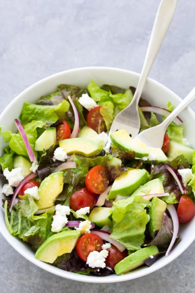

Green Salad Recipe

Description
This salad recipe is especially delicious served with a tangy vinaigrette.
This easy homemade vinaigrette is my favorite, and I’ll sometimes
substitute lemon juice for the vinegar. A balsamic vinaigrette also works
really well with this salad. If you prefer a creamy dressing try my
homemade ranch dressing.
Ingredients
-
6 cups (loosely packed) mixed greens, or lettuce of choice, torn into
bite-size pieces
- 1 small cucumber, chopped
- 1 cup cherry tomatoes, halved
- ¼ small red onion, thinly sliced
- 1 avocado, peeled, pitted and chopped
-
2 ounces goat cheese, crumbled, or other cheese such as feta, Parmesan
or cheddar
- 6 tablespoons homemade vinaigrette, or dressing of choice
Steps
-
Put the greens in a large bowl. Add the cucumber, cherry tomatoes and
red onion.
-
Drizzle on vinaigrette or dressing of choice, a little at a time,
tossing to mix, until salad is dressed to your liking.
-
Add the avocado and goat cheese and toss gently to mix in. Serve
immediately.